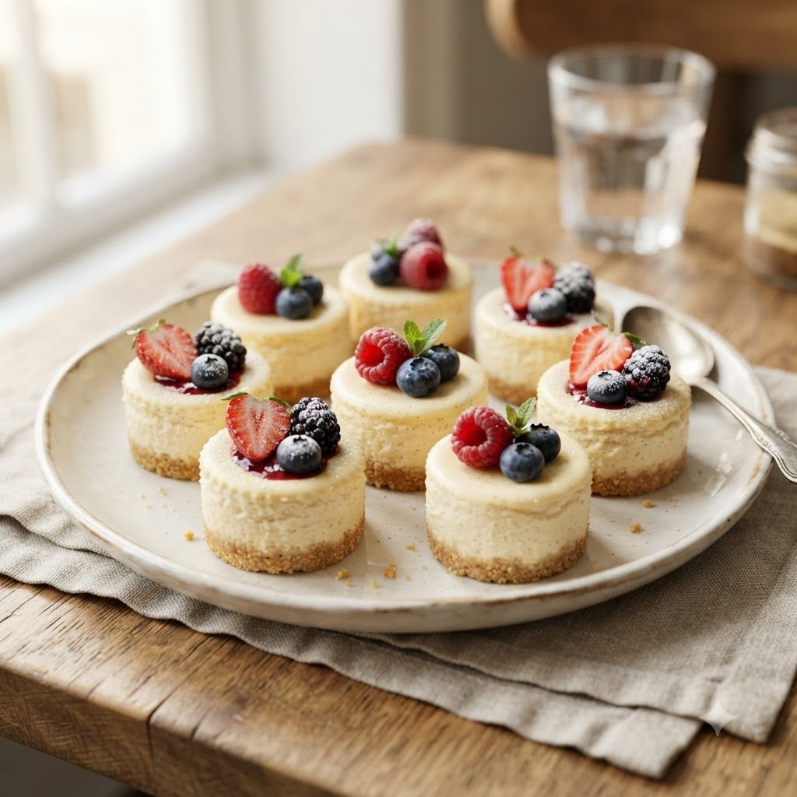

Mini Cheesecakes

Mini Cheesecakes
Airfryer – Bake 150°C 16 min makes 6
🔥 Airfryer
Ingredients
- 1 cup crushed digestive biscuits
- 3 tbsp melted butter
- 200g cream cheese, softened
- 1/4 cup sugar
- 1 egg
- 1/2 tsp vanilla extract
Method
1Preheat: Preheat the Airfryer to 150°C for 4 minutes before adding the food to the basket.
2Mix crushed biscuits with melted butter; press into small muffin cups or ramekins as a base.
3Beat cream cheese, sugar, egg and vanilla until smooth; pour over the base.
4Place cups in the basket.
5Bake at 150°C for 16 minutes until just set with a slight wobble in the centre. Chill before serving.
Tip: Baking low and slow prevents cracks on top.